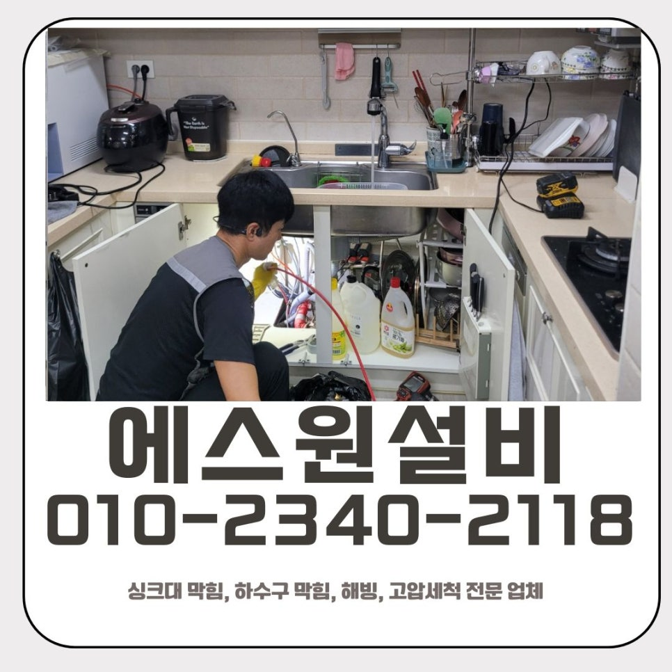
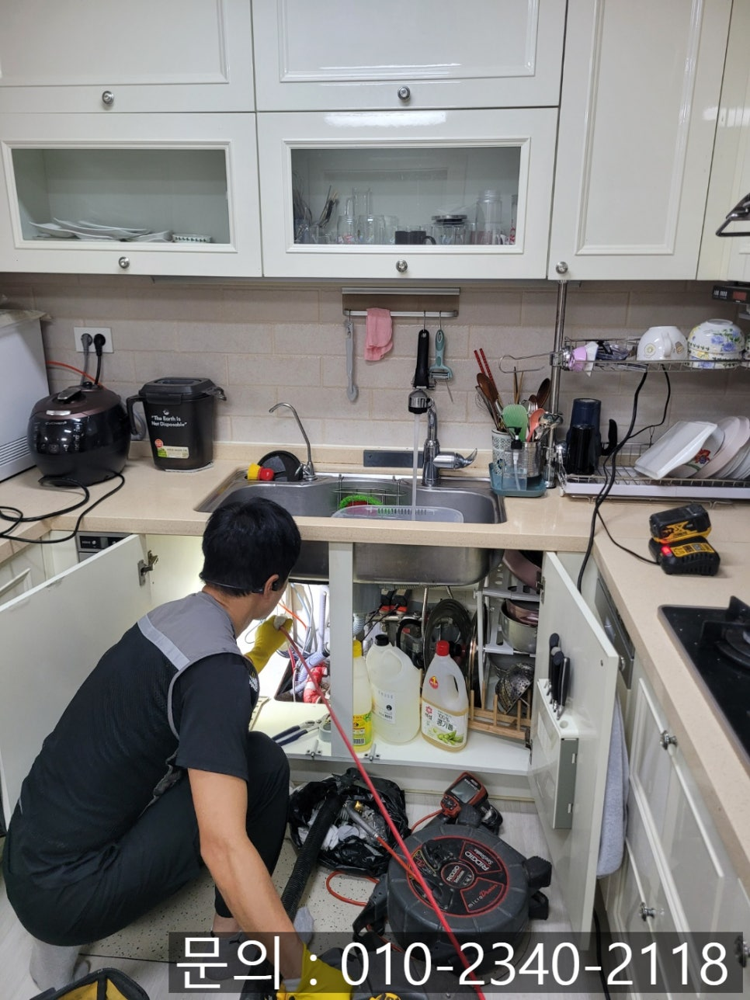
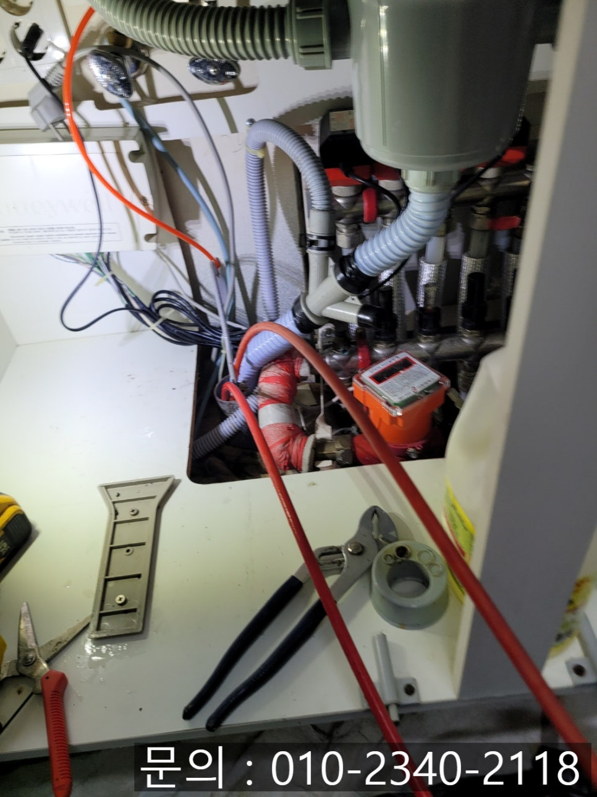
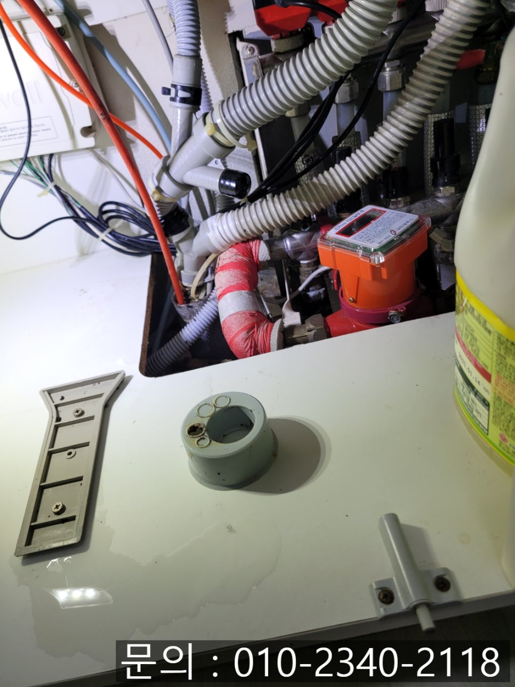
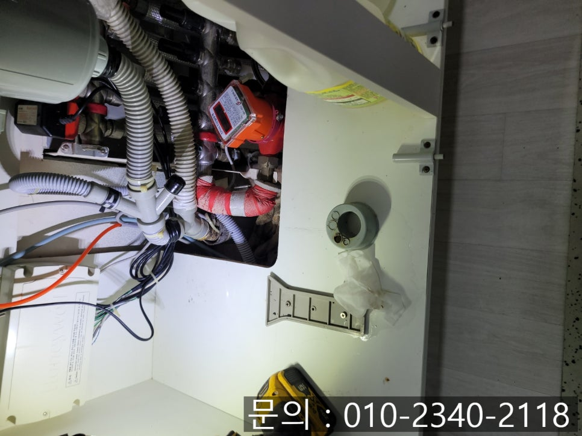
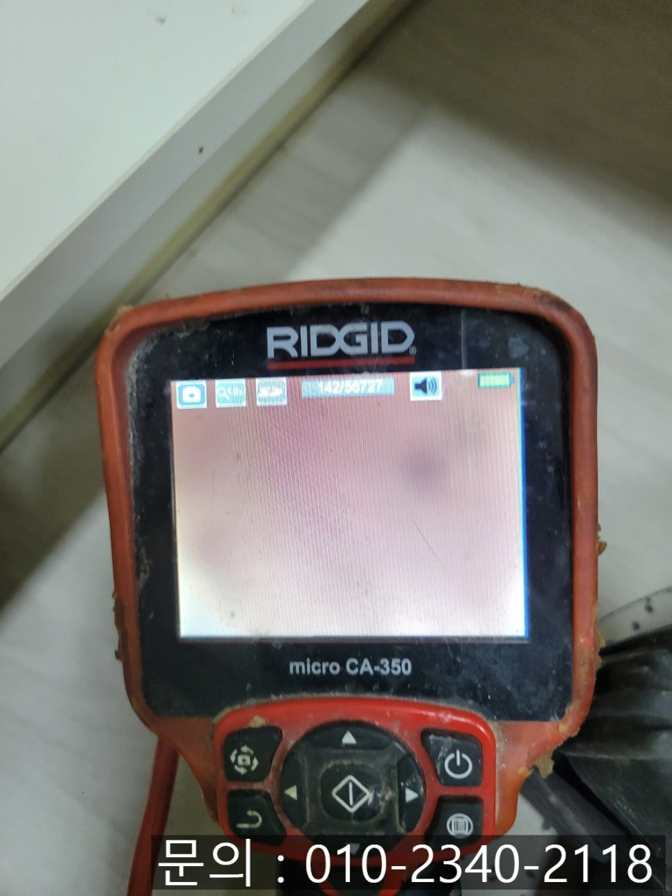
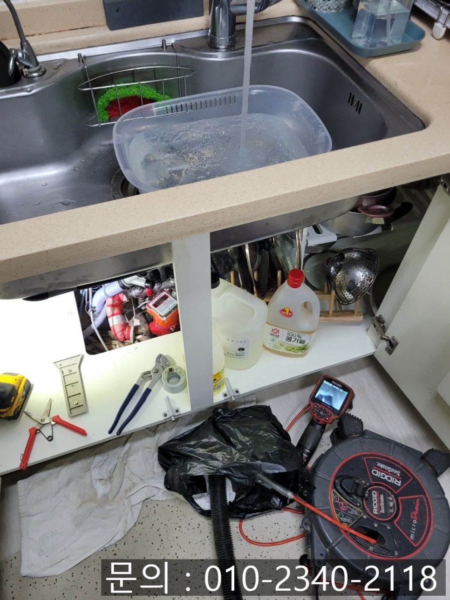

🏠 야탑동 싱크대 막힘 성남 판교동 하수구 역류 뚫는 방법
성남 야탑동 싱크대막힘 전문 시공 후기

📋 작업 개요
- 위치: 성남 야탑동, 야탑동, 성남
- 서비스 유형: 싱크대막힘, 하수구막힘, 배관막힘, 누수수리, 역류해결, 뚫는업체, 배관청소
- 작업 일시: 2025. 8. 27. 13:40
- 업체명: 하수구수사대 (010-5615-2118)
🔍 문제 상황
안녕하세요.
성남 판교동 하수구 역류 뚫는 방법을 알려드리는 에스원 설비입니다.
연일 계속되는 찜통더위에 집안 공기도 후끈 달아오르죠. 이런 날씨일수록 쾌적한 생활 환경이 중요해집니다. 오늘은 야탑동 싱크대 막힘으로 현장을 방문 드렸던 하수구 청소 사례를 소개해 드리도록 하겠습니다.

🔎 원인 분석
💡 전문가 진단: 정밀 진단 장비를 사용하여 슬러지의 고착 여부를 판명하고 타격/세척 작업을 실시했습니다.
얼마 전 에스원 설비로 야탑동에 거주 중이신 고객님의 긴급한 요청을 받게 되었어요. 싱크대에 물이 빠지지 않는다는 SOS 요청이었습니다. 야탑동 싱크대 막힘이 생기면 불편한 것도 불편하지만, 심한 경우 역류나 악취, 누수 피해까지 이어질 수 있기 때문에 빠른 대처가 필수입니다.
이번 야탑동 싱크대 막힘 현장은 주방 싱크대 하수 배관이 막혀 물이 고이고 심지어 역류까지 일어나 집안 공기가 불쾌해질 만큼 상태가 좋지 않았어요. 가끔 고객님들 중 일부는 배수구 클리너나 뜨거운 물을 사용하여 셀프로 뚫어보려고 시도하시기도 하는데요.
아주 잠깐 동안은 나아진 것 같아도 머지않아, 다시 막히거나 잘못하면 배관이 손상되는 등의 큰 피해로 이어질 수 있어요. 그래서 근본적인 원인을 제일 먼저 파악하는 것이 제일 중요합니다.

🔧 작업 과정
배관 내부는 좁고 길기 때문에 육안으로는 확인이 어려워요. 그래서 배관 내시경 카메라라는 전문 장비를 사용합니다. 작은 카메라가 싱크대 배수구 속 깊이 들어가 내부 상황을 실시간으로 확인할 수 있습니다.
점검해 보니, 화면에 빼곡하게 달라붙은 기름 슬러지와 음식물 찌꺼기들을 확인할 수 있었어요.
원인을 확인했으니 본격적으로 청소 작업을 시작하였어요. 플렉스 샤프트 장비와 석션기를 투입하였습니다. 샤프트 장비는 장비 끝부분에 갈퀴 모양의 날카로운 노즐이 달려 있어 강력하게 회전을 하면서 배관 내부에 달라붙어 있는 슬러지와 이물질을 긁어내면서 잘게 부숴주면서 작동해 주었어요.
배관 내시경 카메라로 내부 오염도를 체크하면서 잘게 부서진 찌꺼기들은 석션기를 이용하여 강력하게 흡입하여 빨아내어 깨끗하게 정리해 주는 작업을 이어 갔습니다. 두 장비를 번갈아 사용하면서 배관 내부를 스케일링하듯이 꼼꼼하게 청소를 해드렸어요.
작업이 끝난 뒤에는 다시 내시경 카메라로 검사하여 내부를 확인하였어요. 처음에는 뿌옇고 막혀있던 배관 내부가 깨끗해지고 물도 막히지 않고 시원하게 콸콸 내려가는 모습을 확인할 수 있었어요.


✅ 작업 완료
고객님께서도 빠른 시간 내에 막혔던 싱크대 배관이 뚫리는 것을 보시고 매우 안도하고 감사의 말씀을 전해주셨어요.
주방 배관은 기름기와 음식물이 반복적으로 쌓일 수밖에 없기 때문에 막힘이 발생하면 성남 판교동 하수구 역류 뚫는 방법을 확실히 알고 있는 전문가인 에스원 설비의 도움을 받아 해결하시는 것을 추천드릴게요. 하수구 막힘 문제로 불편을 겪고 계시다면 혼자 끙끙 앓지 마시고, 언제든지 편하게 에스원 설비를 찾아주세요.




⚠️ 베란다 누수 및 방수 관리 방법
- ✅ 비가 많이 올 때 창틀 주변이나 아래층 천장에 얼룩이 생기는지 정기적으로 확인해 보세요.
- ✅ 우수관 주변 실리콘 마감이 들뜨거나 깨진 틈새가 있는지 손상 여부를 수시로 체크하세요.
- ✅ 베란다 바닥 타일의 줄눈(메지)이 소실되면 그 틈으로 물이 침투하여 누수가 유발됩니다.
- ✅ 누수 의심 증상 발견 시 방치하면 아래층 손실이 커지므로 즉시 전문가의 진단을 받으십시오.
💡 핵심 정리
- 확실한 장비 작업(내시경 점검 및 샤프트 스케일링)으로 원인을 뿌리 뽑습니다.
- 작업 후 1년 이내에 동일한 부위 재발 시 100% 무상 A/S 서비스를 보장합니다.
- 서울 · 경기 · 인천 전 지역에 24시간 언제든 긴급 출동할 수 있도록 항시 대기 중입니다.
❓ 자주 묻는 질문 (FAQ)
🚨 성남 야탑동 싱크대막힘 문제로 고민이신가요?
정확한 원인 진단과 확실한 시공으로 재발 없는 해결을 약속드립니다.
24시간 긴급 출동 | 서울 · 경기 · 인천 전지역 | 1년 내 재발 시 무상 A/S